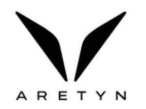

Trade Mark Journal No.2026/001 2 January 2026
UK00004282202 22 October 2025 (25,28)

- Class 25
- Bikinis; Boots; Footwear; Headwear; Leggings; Loungewear; Pajamas; Parkas; Raincoats; Sandals; Scarves; Sleepwear; Slippers; Sneakers; Socks; Sweatbands; Sweatpants; Swimwear; Tights; Vests; Athletic shoes; Baseball caps and hats; Body suits; Boots for sports; Cleats for attachment to sports shoes; Clothing, namely, jackets, hooded sweatshirts, sweaters, sweatshirts, shirts, T-shirts, soccer jerseys, soccer shorts, athletic tops, vests, shorts, pants, leggings, dresses, and skirts; Flannel shirts; Fleece jackets; Gloves as clothing; Gym shorts; Hiking boots; Jerseys being clothing; Jogging outfits; Jogging pants; Jogging suits; Muscle tops; Pinnies in the nature of scrimmage vests for use in sports; Rash guards; Running shoes; Sports bras; Sports shoes; Swim trunks; Swimwear for children; Swimwear for men; Swimwear for women; Tank tops; Tennis shoes; Track pants; Windbreakers; Yoga pants; Bicycle gloves; Children's and infants' apparel treated with fire and heat retardants, namely, jumper coveralls, overall sleepwear, pajamas, rompers and one-piece garments; Climbing gloves; Clothing, namely, base layers; Driving gloves; Footwear, namely, flip-flops; Golf cleats; Head sweatbands; Moisture-wicking sports bras; Mountaineering gloves; Snowboard gloves; Sports jerseys; Clothing.
- Class 28
- Targets; Trampolines; Archery gloves; Athletic sporting goods, namely, adhesive tape for hockey stick and uniform support; Bags specially adapted for sports equipment; Balls for sports; Goalkeepers' gloves; Goals for ice hockey; Hurdles; Jump ropes; Resistance bands for fitness purposes; Basketball goal sets; Basketball goals; Cone markers for sports; Elbow guards for athletic use; Exercise equipment in the nature of agility ladders; Field hockey goals; Hand guards for athletic use; Hockey goals; Knee guards for athletic use; Lacrosse goals; Leg guards for athletic use; Nets for ice hockey goals; Nets for lacrosse goals; Pads for ice hockey goalkeepers; Shin guards for athletic use; Soccer goals; Soccer ball goal nets; Sporting goods and equipment for speed training, namely, rings, cones, speed ladders, coaching sticks, training arches, ankle bands, resistance chutes, hurdles; Sports ball rebounders; Sports field equipment, namely, corner flags; Toy whistles; Volleyball boundary lines; Sporting and physical exercise equipment.
New Gen Sports Group LLC
Representative: Osborne Clarke LLP